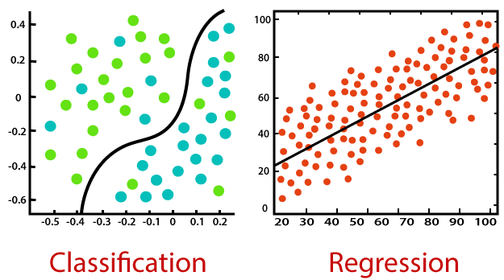

1. Introducción a Machine Learning con tidymodels
Machine Learning
No-supervisado
No hay una variable de resultado
- Por ejemplo
- Componentes principales
- Reducción de dimensionalidad

Supervisado
Hay una variable de resultado
- Regresión: variable de resultado continua
- Clasificación: variable de resultado categórica

Proceso de análisis de datos
- Explorar los datos (EDA)
- Modelos iniciales
- Evaluación de los modelos
- “Ingeniería de variables”- crear nuevas variables
- Ajustar-sintonizar los modelos
- Evaluación final de los modelos
- Modelo Final
 imagen de Tidymodels
imagen de Tidymodels
En este workshop utilizaremos
Analizar datos en R
- Usar base R
- Usar tidyverse

Tidymodels
parsnip - para la especificación de modelos recipes - para la preparación de datos rsample - para la validación de modelos tune - para la sintonización de hiperparámetros workflows - para la creación de flujos de trabajo dials - para la selección de hiperparámetros yardstick - para la evaluación de modelos más